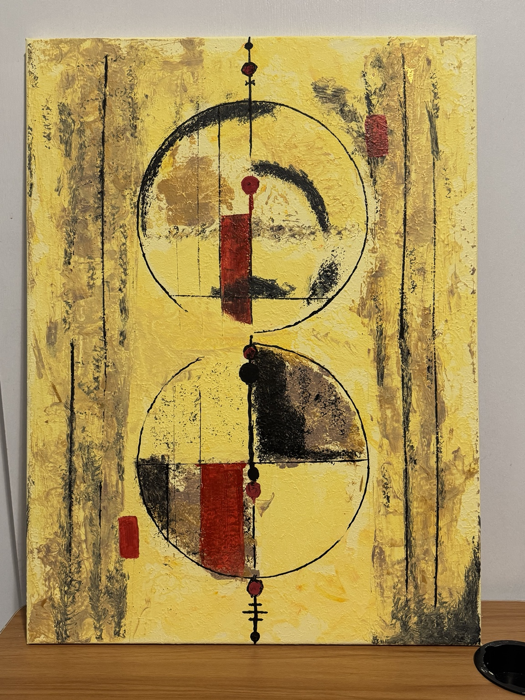
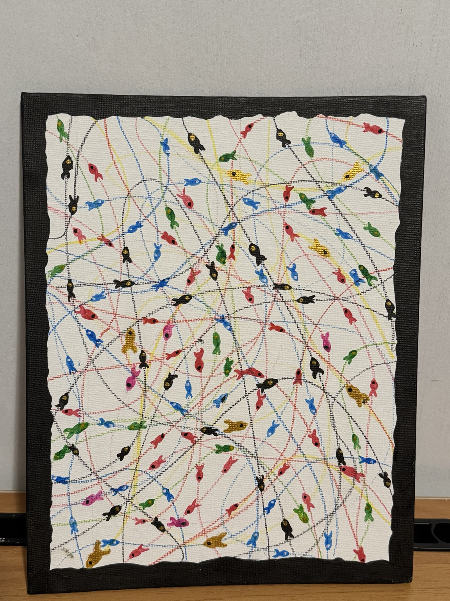
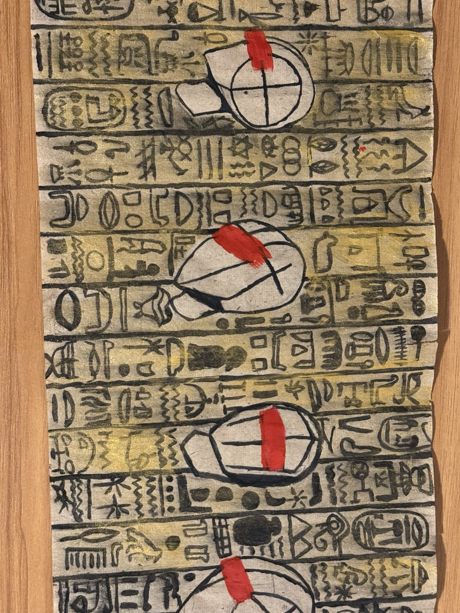
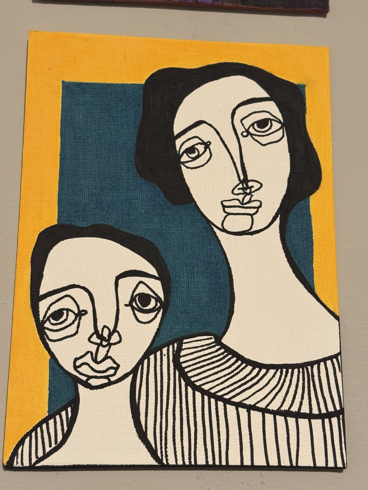
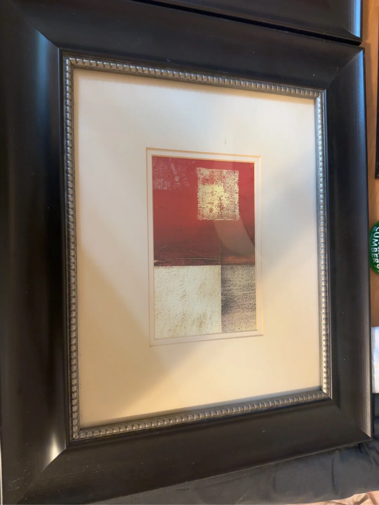
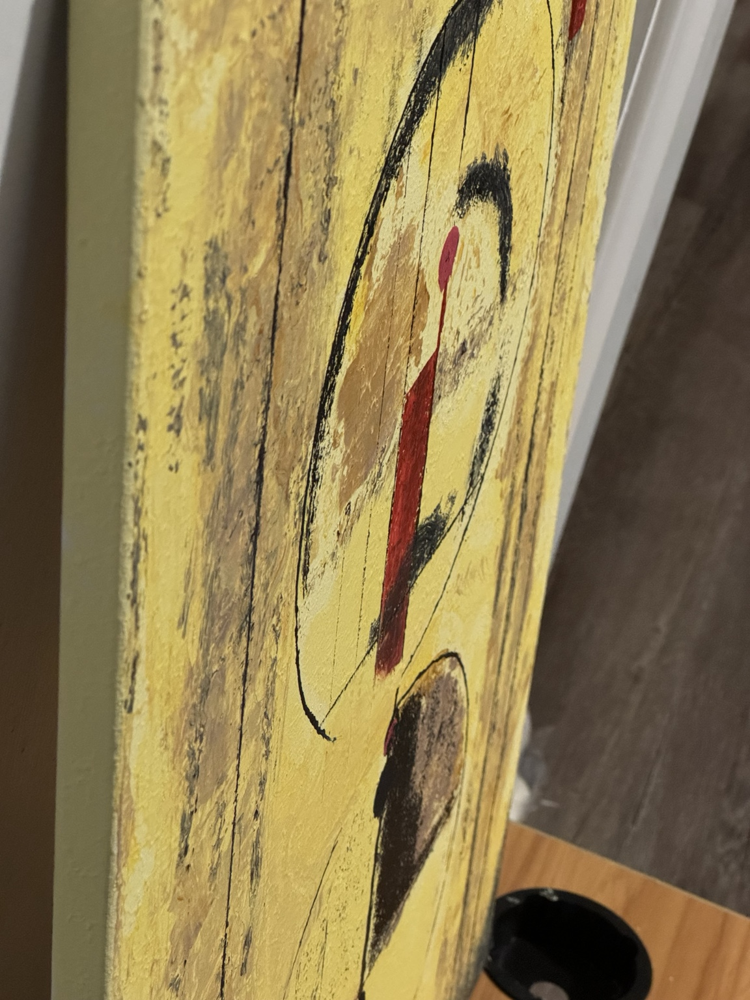
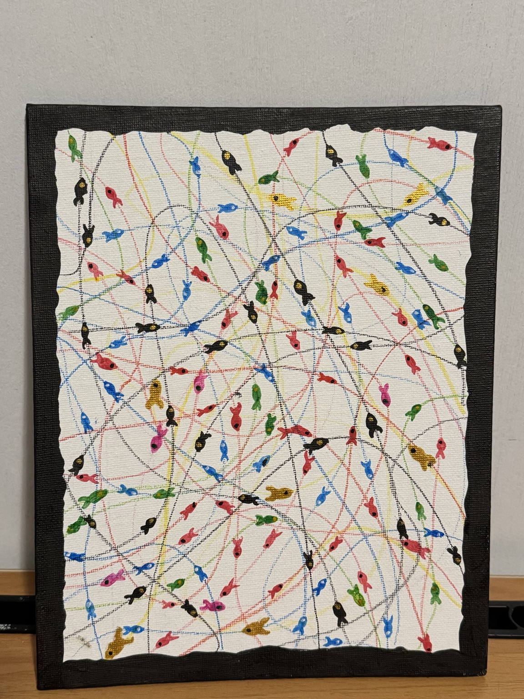
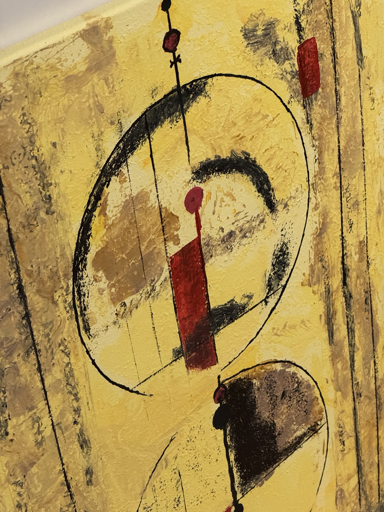

Two Worlds, One Axis
2026 · Acrylic and textured media on canvas
Approx. 60.1 × 40.5 cm · Unique original
Proposed asking price · CAD $3,000 framed
Original works exploring identity, connection, memory, and the quiet architecture of human experience.
Explore the collection
Paintings and works on paper, each created by hand and offered as a unique original.
2026 · Acrylic and textured media on canvas
Approx. 60.1 × 40.5 cm · Unique original

2026 · Mixed media on canvas
Unique original · Dimensions to confirm

From The Lost Archive series
2026 · Watercolour and acrylic on bamboo pulp Xuan paper
34 × 17 cm (13.4 × 6.7 in) · Original artwork

Expressive figurative painting
Title and dimensions to confirm

Abstract composition
Dimensions and medium to confirm



Two circular worlds, joined by a single axis, suggest the relationship between what we reveal and what we keep within. Golden layers evoke time; black forms and red marks trace the tension between structure and change.
Each brushstroke and surface variation belongs to the original physical artwork.
Ask about this workWorking under the name Ansh Art, Anshpreet Kaur Siddhu is an Ontario-based visual artist exploring contemporary abstraction, symbolic forms, and expressive mark-making.
Her developing practice brings together textured surfaces, geometric structures, and vivid accents to explore the emotional connections between people, memories, and imagined worlds.
“Two worlds may appear separate, yet remain connected by forces neither can fully understand.”
For artwork availability, acquisition inquiries, collaborations, or gallery representation, contact Ansh Art. Please email the artist directly for availability and acquisition details.
Inquire about an artworkEmail: anshpreetvb@gmail.com